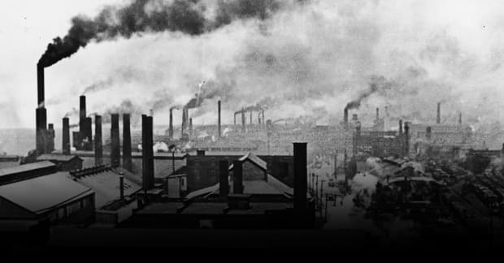
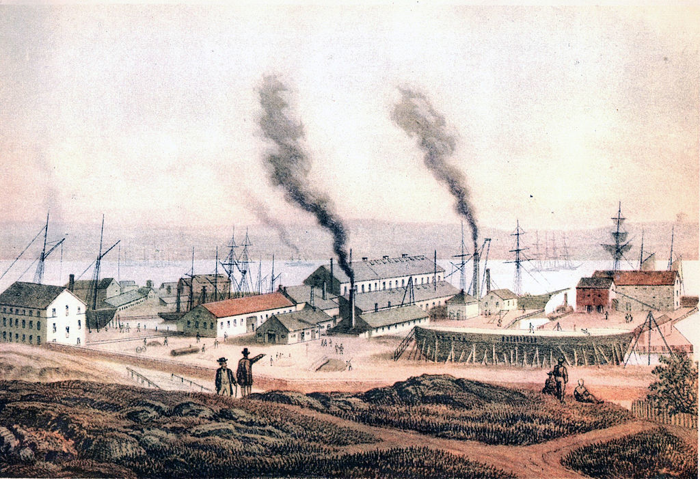

Industriella revolution? I denna sidan kommer ni få reda på mer fakta om revolutionen. En av dem revolution som har förändrat vårt samhälle, levnasstardard med mera.
Klicka länken nedan för uppfinningar under indutriella revolution
Industriella revolution? I denna sidan kommer ni få reda på mer fakta om revolutionen. En av dem revolution som har förändrat vårt samhälle, levnasstardard med mera.
Klicka länken nedan för uppfinningar under indutriella revolution
 |
 |  |
|---|---|---|
| Vad är revolution? | Vad är indutriella revolution? | Var startade revolutionen? |
| En revolution enligt NE (Nationalencyklopedin) är en snabb och genomgripande förändring då något nytt skapas. | Industriella revolution var en snabb och stor förändring från ett samhälle som byggde på att människor arbetade med jordbruk till ett samhälle där de flesta arbetade i industrier. | Det var först i Storbritanien |
| När var den industriella revolutionen? | Vad var det som introducerades under indutriella revolutionen? | Vad har man för nytta av att istället börjar använda maskiner och minskar kroppsligt arbetskraft? |
| Det var omkring mellan 1760 till 1840. 1820-talet blev det också snabba förändringar i andra delar av världen. | Det var bland annat ny teknik, genom att nya maskiner och förbättringar som har kommit har man minskat kroppsligt arbetskraft. | Genom att använda maskiner kan man pruducera fler utbud eftersom det har blivit tidseffektivare. |
| I vilket område gick denna utvecklingen snabb? | Finns det några negativa konsekvenser av industriella revolution? | Finns det fortfarande någon eller några spår av den industriella revolution idag? |
| Områden där det är nära till järnmalm och stenkol gick utveckling snabbare. | Under revolutionen har man använt som redan nämnt, kol, olja alltså fossila bränsle. Detta orsakar stor mängd växthusgaser som släpps ut och ökar jordens medeltemperatur. | JA, det finns. Den ger oss tekniska hjälpmedel, |